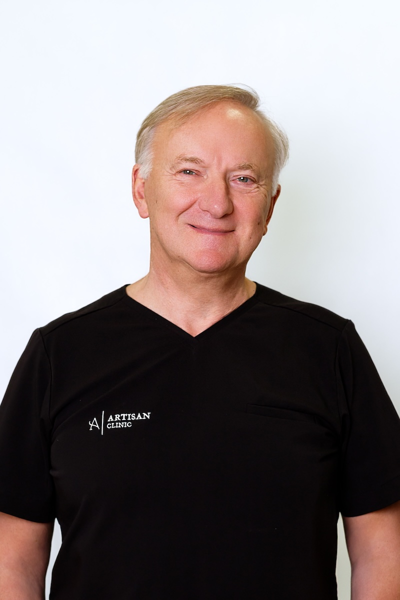

dr n. med. Tadeusz St. Witwicki
Specialist in plastic, reconstructive, and aesthetic surgery.He gained experience under the guidance of his parents — doc. Zofia Witwicka, an outstanding plastic surgeon and laryngologist, and prof. Tadeusz Witwicki, an orthopedic specialist.
He studied at the Warsaw Medical Academy and completed training in Beijing, Glasgow, Los
Angeles,
and Ghent. He obtained his specialization in plastic surgery at the Department of Plastic
Surgery of the Medical Center for Postgraduate Education in Warsaw. His specialization supervisor was the
founder of Polish plastic surgery, prof. Michal Krauss. He regularly participates in European conferences
in his field of specialization (including Paris, Rome, Milan, Stockholm, and Oslo). He has been running
his own medical practice for over 20 years.
Founding member of the Polish Society of Aesthetic Medicine and Anti-Aging. Regular member of the Polish Society of Plastic, Reconstructive, and Aesthetic Surgery, and member of the Organizing Committee of the 1st PTCHPRiE Congress. Member of the Polish Society of Oncological Surgery.
International Trainer of APTOS Revitalizing and Lifting Techniques, SlimLipo method trainer in Poland, and conducts training for physicians in the field of breast reconstruction.
Author of numerous publications in the field of plastic and reconstructive surgery.